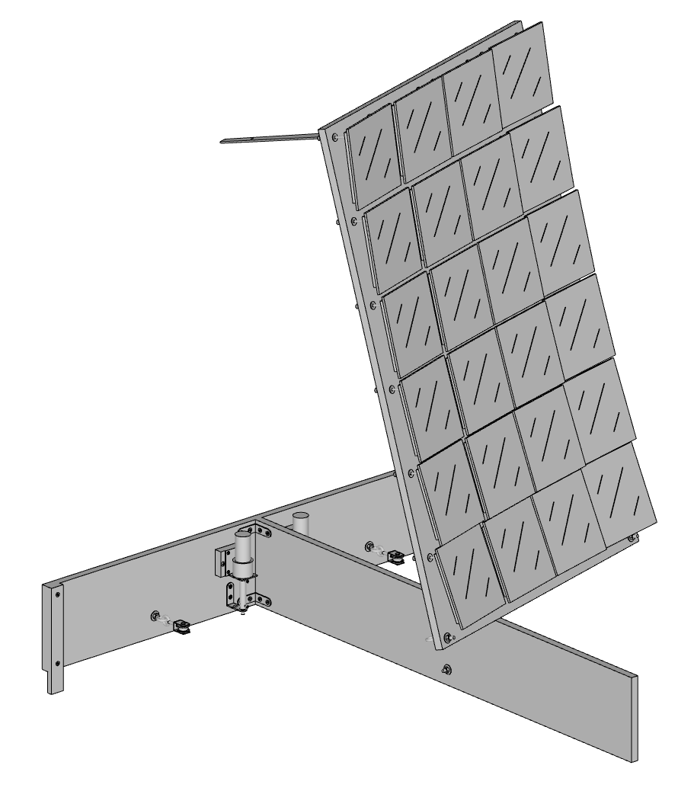
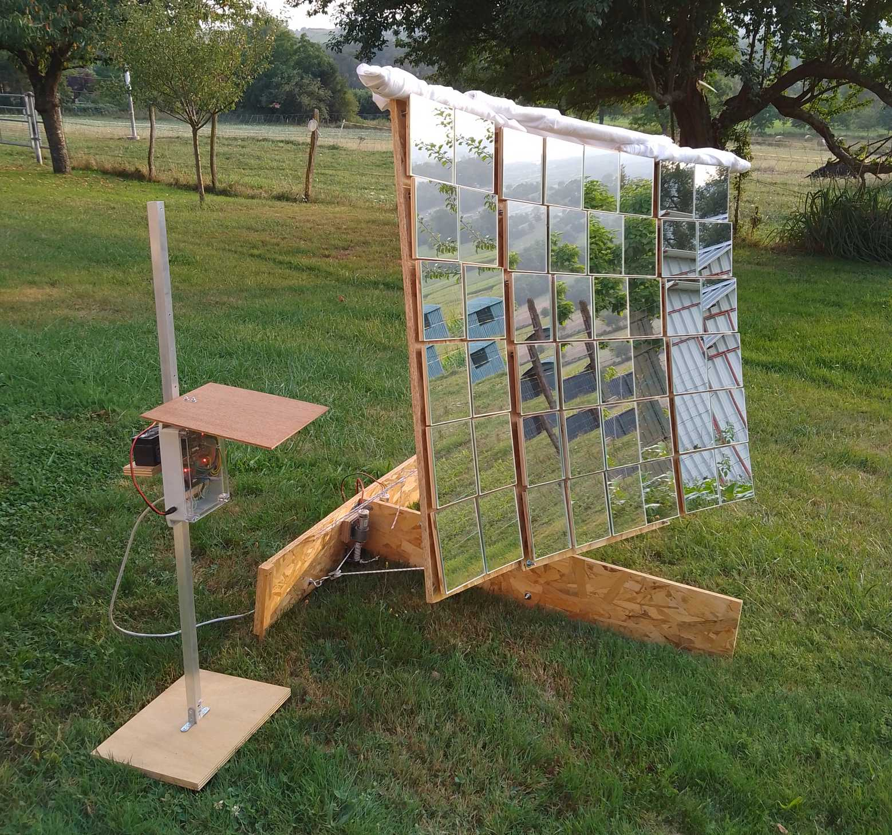

Concentrateur solaire
En 2023 et 2024 j’ai conçu et réalisé un concentrateur solaire :
Panneau orientable (cliquez ici pour ouvrir le modèle 3D)
Ce projet est open-source et documenté en détail sur mon dépôt solar_concentrator.
Un des défis de ce projet était d’embarquer la totalité des algorithmes sur une carte microcontrôleur économique :
- Processeur : ESP32 à 240 MHz
- RAM : 520 Ko + 4 Mo (PSRAM)
- Capteur caméra : OV2640
- Prix : 12 €
La totalité du code a pu être implémenté sur cette plateforme :
- logique haut niveau de l’application
- interface utilisateur (serveur http embarqué accessible par Wifi)
- acquisition et traitement d’images
- régulation et commande des moteurs
Panneau orientable avec le superviseur